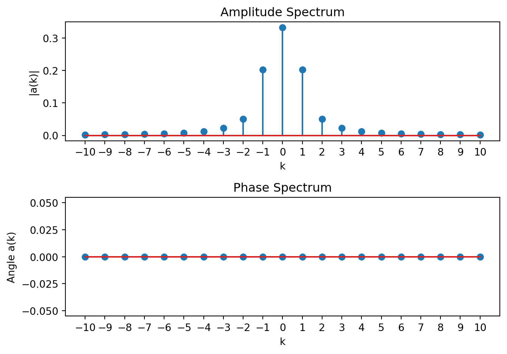
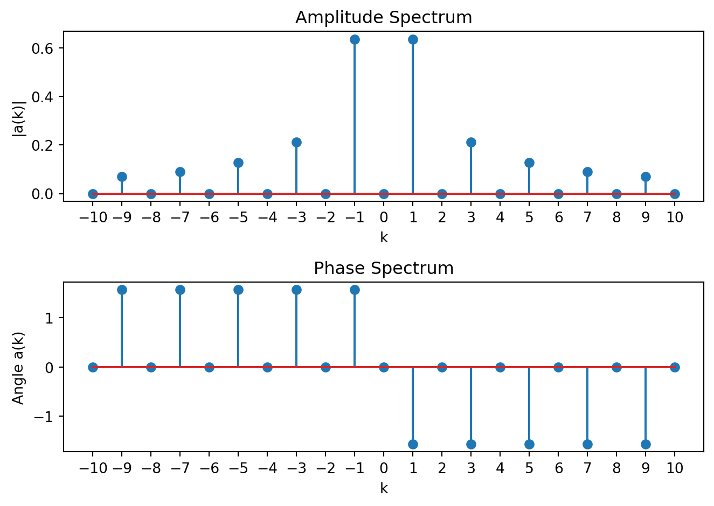

14 CT Fourier Series
Recall the complex exponential \(e^{st}\) for \(s\in\mathbb{C}\) is the Eigenfunction of CT LTI systems. If we can decompose an input into a (possibly infinite) sum of such signals, we can easily determine the output using the superposition principle. This is the practical significance of Fourier methods. In the following, it can be confusing as to why we are rewriting the same function in a different way, but the effort pays off since, as we will see, it simplifies analysis significantly and gives us intuition about how LTI systems work.
In this section we consider the decomposition when the input is periodic, called the CT Fourier Series (CTFS).
Recall a signal \(x(t)\) is periodic, with fundamental frequency \(\omega_0 = \frac{2\pi}{T_0}\) rad/sec or \(f_0 = \frac{1}{T_0}\) Hertz, if \(x(t) = x(t+kT_0)\) for integer multiple \(k\) and fundamental period \(T_0\in \mathbb{R}\). As we shall see, in this case the complex exponent of the Eigenfunction becomes \(s_k = jk\omega_0\), a complex sinusoid with frequencies that are harmonics of the fundamental frequency. The decomposition is a countably infinite sum. This gives the input-output relationship for a stable LTI system as \[x(t) = \sum\limits_{k = -\infty}^{\infty} a_k \, e^{j k\omega_0 t} \; \longrightarrow\; y(t) = \sum\limits_{k = -\infty}^{\infty} H(j k\omega_0)\, a_k \, e^{j k\omega_0 t}\] where \(H(j k\omega_0)\) are the Eigenvalues or frequency response. We now turn to determining under what circumstances the decomposition exists and how to find the coefficients \(a_k\).
14.1 Synthesis and Analysis Equation
Suppose we can approximate (we will revisit shortly when this approximation is exact) the periodic function \(x(t)\) by the sum \[\boxed{x(t) \approx \sum\limits_{k = -\infty}^{\infty} a_k \, e^{j k\omega_0 t}\;.}\] This is called the synthesis equation of the CT Fourier series.
Assuming equivalence, let us multiply both sides by the function \(e^{-jn\omega_0 t}\), \[x(t)e^{-jn\omega_0 t} = \sum\limits_{k = -\infty}^{\infty} a_k \, e^{j k\omega_0 t}e^{-jn\omega_0 t}\] and integrate over one period \[\int\limits_{0}^{T_0} x(t)e^{-jn\omega_0 t} \; dt = \int\limits_{0}^{T_0} \sum\limits_{k = -\infty}^{\infty} a_k \, e^{j k\omega_0 t}e^{-jn\omega_0 t} \; dt\] Exchanging the order of integration and summation in the right-hand expression gives \[\int\limits_{0}^{T_0} x(t)e^{-jn\omega_0 t} \; dt = \sum\limits_{k = -\infty}^{\infty} a_k \left[ \int\limits_{0}^{T_0} \, e^{j k\omega_0 t}e^{-jn\omega_0 t} \; dt\right]\] The bracketed term can be rewritten as \[\int\limits_{0}^{T_0} \, e^{j k\omega_0 t}e^{-jn\omega_0 t} \; dt = \int\limits_{0}^{T_0} \, e^{j (k-n)\omega_0 t} \; dt = \int\limits_{0}^{T_0} \cos((k-n)\omega_0 t) \; dt + j \int\limits_{0}^{T_0} \sin((k-n)\omega_0 t) \; dt\] We now note that for \(k\neq n\) the integrals of the real and imaginary parts are zero \[\int\limits_{0}^{T_0} \cos((k-n)\omega_0 t) \; dt = \frac{1}{(k-n)\omega_0}\sin((k-n)\omega_0 t) \Big|_{0}^{T_0} = \frac{1}{(k-n)\omega_0}\sin((k-n)2\pi) - \frac{1}{(k-n)\omega_0}\sin(0) = 0\] \[\int\limits_{0}^{T_0} \sin((k-n)\omega_0 t) \; dt = -\frac{1}{(k-n)\omega_0}\cos((k-n)\omega_0 t) \Big|_{0}^{T_0} = -\frac{1}{(k-n)\omega_0}\cos((k-n)2\pi) + \frac{1}{(k-n)\omega_0}\cos(0) = 0\] When \(k=n\) \[\int\limits_{0}^{T_0} e^{j (k-n)\omega_0 t} \; dt = \int\limits_{0}^{T_0} \; dt = T_0\] Thus the bracketed term above is \[\int\limits_{0}^{T_0} \, e^{j k\omega_0 t}e^{-jn\omega_0 t} \; dt = T_0\, \delta[k-n]\] and the right-hand side is \[\sum\limits_{k = -\infty}^{\infty} a_k \left[ \int\limits_{0}^{T_0} \, e^{j k\omega_0 t}e^{-jn\omega_0 t} \; dt\right] = \sum\limits_{k = -\infty}^{\infty} a_k T_0\, \delta[k-n] = T_0 \,a_n\] Thus we obtain the analysis equation of the CT Fourier series: \[\boxed{a_n = \frac{1}{T_0} \int\limits_{0}^{T_0} x(t)e^{-jn\omega_0 t} \; dt}\] where the integration can be over any interval of length \(T_0\) that is equal to the period, and the symbol for the subscript (integer \(n\)) is arbitrary. The CT Fourier Series coefficients are also called the spectrum of the signal. In general the \(a_k\) are complex. The function of \(k\), \(|a_k|\) is called the amplitude spectrum. The function of \(k\), \(\angle a_k\) is called the phase spectrum. When plotting the coefficients it is common to plot the amplitude and phase spectrum together.
Example of the Fourier series.
Consider the signal \[x_p(t) = \left\{ \begin{array}{lc} t^2 & -1 < t < 1\\ 0 & \mbox{else} \end{array} \right.\] periodically extended with period \(T_0 = 2\) \[x(t) = \sum\limits_{i = -\infty}^{\infty} x_p(t - 2i)\] as shown below:
To find the Fourier Series approximation of \(x(t)\), \[x(t) \approx \sum\limits_{k = -\infty}^{\infty} a_k \, e^{j k\omega_0 t}\; ,\] we need to find the coefficients \[a_k = \frac{1}{T_0} \int\limits_{0}^{T_0} x(t)e^{-jk\omega_0 t} \; dt\] Since the integration can be over any period, we can use the limits \([-1,1]\) and note that \(T_0 = 2\) so that \(\omega_0 = \pi\), giving the sequence of expressions \[\begin{aligned} a_k &= \frac{1}{2} \int\limits_{-1}^{1} t^2\,e^{-jk\pi t} \; dt\\ &= \frac{1}{2} \left[ \int\limits_{-1}^{1} t^2\,\cos(-k\pi t) \; dt + j \int\limits_{-1}^{1} t^2\,\sin(-k\pi t) \; dt \right]\\ &= \frac{1}{2} \left[ \int\limits_{-1}^{1} t^2\,\cos(k\pi t) \; dt + j \int\limits_{-1}^{1} - t^2\,\underbrace{\sin(k\pi t)}_{\text{always = 0}} \; dt \right]\\ &= \frac{1}{2} \int\limits_{-1}^{1} t^2\,\cos(k\pi t) \; dt\; \mbox{ using an integration table }\\ &= \frac{1}{2} \frac{4k\pi\overbrace{\cos(k\pi)}^{(-1)^k} + 2(k^2\pi^2-2)\overbrace{\sin(k\pi)}^{\text{always = 0}}}{k^3\pi^3}\\ a_k &= \frac{2}{k^2\pi^2}\left(-1\right)^k \end{aligned}\] This result is undefined for when \(k=0\). In that case note the original integral is \[a_0 = \frac{1}{2} \int\limits_{-1}^{1} t^2 \; dt = \frac{1}{6}t^3 \Big|_{-1}^{1} = \frac{1}{3}\] Thus the final approximation is \[x(t) \approx \sum\limits_{k = -\infty}^{\infty} \underbrace{\frac{2}{k^2\pi^2}\left(-1\right)^k}_{a_k} \, e^{j k\pi t} \;.\] We can plot the spectrum of this signal (using for example Matlab)
k = -10:10;
a = 2./(pi^2*k.^2);
a(11) = 1/3;
subplot(2,1,1);
stem(k, abs(a));
xlabel('k');
ylabel('|a(k)|');
title('Amplitude Spectrum');
subplot(2,1,2);
stem(k, angle(a));
xlabel('k');
ylabel('Angle a(k)');
title('Phase Spectrum');Giving the amplitude and phase spectrum plot
14.2 Variations on the Synthesis and Analysis Equations
There are two commonly used, equivalent, expressions for computing the CTFS coefficients. They can be derived using Euler’s formula and related trig identities.
Exponential Form. This is the form derived above \[x(t) = \sum\limits_{k = -\infty}^{\infty} a_k \, e^{j k\omega_0 t}\] where \[a_k = \frac{1}{T_0} \int\limits_{T_0} x(t)e^{-jk\omega_0 t} \; dt\]
Trig Form \[x(t) = b_0 + \sum\limits_{k = 1}^{\infty} b_k \,\cos(k\omega_0 t) + c_k\,\sin(k\omega_0 t)\] where \[b_0 = \frac{1}{T_0} \int\limits_{T_0} x(t) \; dt\] is the average value of the signal, and \[b_k = \frac{2}{T_0} \int\limits_{T_0} x(t)\cos(k\omega_0 t) \; dt\] \[c_k = \frac{2}{T_0} \int\limits_{T_0} x(t)\sin(k\omega_0 t) \; dt\]
Compact Trig Form \[x(t) = d_0 + \sum\limits_{k = 1}^{\infty} d_k \,\cos(k\omega_0 t + \theta_k)\] where \[d_0 = \frac{1}{T_0} \int\limits_{T_0} x(t) \; dt\] is the average value of the signal, and \[d_k = \sqrt{b_k^2 + c_k^2}\] \[\theta_k = \arctan\left( \frac{-c_k}{b_k} \right)\]
Note that \(2a_k = b_k -j c_k\) for \(k \geq 1\) and \(a_0=b_0\).
14.3 Convergence of the CT Fourier Series
As mentioned above the Fourier Series is strictly speaking an approximation \[x(t) \approx \sum\limits_{k = -\infty}^{\infty} a_k \, e^{j k\omega_0 t} \mbox{ where } a_k = \frac{1}{T_0} \int\limits_{T_0} x(t)e^{-jk\omega_0 t} \; dt\] to determine when this approximation is an equivalence (and in what sense) we need to establish the existence and convergence of the integral and summation respectively.
The coefficients \(a_k\) will exist when the integral converges, or equivalently when \[\int\limits_{T_0} \left|x(t)\right| \; dt < \infty\] i.e. the signal is absolutely integrable over any period.
To determine when the summation converges, first consider the truncated CT Fourier Series \[x_N(t) \approx \sum\limits_{k = -N}^{N} a_k \, e^{j k\omega_0 t}\] where the infinite sum has been truncated to the finite range \([-N,N]\). Define the error between the original signal \(x(t)\) and the truncated approximation \(x_N(t)\) at each time point as \[E(N,t) = x(t) - x_N(t)\] There are two relevant notions of convergence. If \[\lim_{N\rightarrow \infty} \int\limits_{T_0} \left| E(N,t] \right|\;dt = 0\] we say the CT Fourier Series converges exactly to the signal. If \[\lim_{N\rightarrow \infty} \int\limits_{T_0} \left| E(N,t) \right|^2\;dt = 0\] we say the CT Fourier Series converges in the mean-square sense to the signal.
More formally the CTFS exists if the Dirichlet Conditions hold for the signal:
The signal has a finite number of discontinuities per period.
The signal has a finite number of maxima and minima per period.
The signal is bounded, i.e. \[\int_{T_0} |x(t)| \;dt < \infty\]
These conditions rule out pathological functions. For most practical signals of interest, the conditions hold.
14.4 Examples of the Fourier Series
Fourier series of the impulse train.
Consider the impulse train signal defined as \[x(t) = \sum\limits_{m = -\infty}^{\infty} \delta(t-mT_0)\] which we be important later when we discuss sampling CT signals. Do the Dirichlet conditions hold? Yes. It has one discontinuity, one maximum, and one minimum per period. It is also bounded since \[\int_{T_0} |\delta(t)| \;dt = 1 \mbox{ by definition.}\] The spectrum for the impulse train is given by \[a_k = \frac{1}{T_0} \int\limits_{T_0} x(t)e^{-jk\omega_0 t} \; dt = \frac{1}{T_0} \int\limits_{-\frac{T_0}{2}}^{\frac{T_0}{2}} \delta(t)e^{-jk\omega_0 t} \; dt = \frac{1}{T_0}\]
Fourier series of a sinusoid.
Consider the signal \(x(t) = \cos(\omega t)\). We can write this as the sum of two complex exponentials using Euler’s formula \[x(t) = \frac{1}{2}e^{j\omega t} + \frac{1}{2}e^{-j\omega t}\] Comparing this to the synthesis equation \[x(t) = \sum\limits_{k = -\infty}^{\infty} a_k \, e^{j k\omega_0 t} = \cdots + a_{-2} \, e^{j (-2)\omega_0 t} + a_{-1} \, e^{j (-1)\omega_0 t} + a_0 + a_{1} \, e^{j (1)\omega_0 t} + a_{2} \, e^{j (2)\omega_0 t} + \cdots\] we note that if \(\omega_0 = \omega\) and \[a_k = \left\{ \begin{array}{lc} \tfrac{1}{2} & k = -1\\[0.5em] \tfrac{1}{2} & k = 1\\[0.5em] 0 & \text{else} \end{array} \right.\] then the two expressions are identical and the CT Fourier Series is an exact representation.
Fourier series of a square wave.
Consider the square wave signal of amplitude \(A > 0\) and period \(T_0 > 0\):
\[x(t) = \sum\limits_{m= -\infty}^{\infty} \left\{ \begin{array}{lc} -A & \tfrac{T_0}{2} < t-mT_0 < 0\\[0.5em] A & 0 < t - mT_0 < \tfrac{T_0}{2} \end{array} \right.\] shown below
This can be approximated in the mean-square sense by the Fourier series
\[ x(t) \approx \sum\limits_{k = -\infty}^{\infty} a_k \, e^{j k\omega_0 t} \]
The coefficients are given by
\[\begin{aligned} a_k &= \frac{1}{T_0} \int\limits_{T_0} x(t)e^{-jk\omega_0 t} \; dt\\ &= \frac{1}{T_0} \left[ \int\limits_{0}^{\frac{T_0}{2}} Ae^{-jk\omega_0 t} \; dt + \int\limits_{\frac{T_0}{2}}^{T_0} -Ae^{-jk\omega_0 t} \; dt\right]\\ &= \frac{1}{T_0} \left[ \frac{A}{-jk\omega_0}e^{-jk\omega_0 t} \Big|_{0}^{\frac{T_0}{2}} + \frac{-A}{-jk\omega_0}e^{-jk\omega_0 t} \Big|_{\frac{T_0}{2}}^{T_0}\right]\\ &= \frac{1}{T_0} \frac{A}{jk\omega_0} \left[ -\left(e^{-jk\omega_0 \frac{T_0}{2}} - e^{0}\right) + \left(e^{-jk\omega_0 T_0} - e^{-jk\omega_0 \frac{T_0}{2}}\right)\right] \end{aligned}\]Note that \(\omega_0\frac{T_0}{2} = \frac{2\pi}{T_0}\frac{T_0}{2}= \pi\) and \(\omega_0 T_0 = \frac{2\pi}{T_0}T_0 = 2\pi\) . Thus
\[\begin{aligned} a_k &= \frac{1}{T_0} \frac{A}{jk\frac{2\pi}{T_0}} \left[ -\left(e^{-jk\pi} - e^{0}\right) + \left(e^{-jk2\pi} - e^{-jk\pi}\right)\right]\\ &= \frac{A}{jk\pi}\left( 1-e^{-jk\pi}\right) \\ &= \left\{ \begin{array}{lc} 0 & k \mbox{ even}\\ \frac{2A}{jk\pi} & k \mbox{ odd} \end{array} \right. \end{aligned}\]The amplitude spectrum is given by \[|a_k| = \left\{ \begin{array}{lc} 0 & k \mbox{ even}\\ \left|\frac{2A}{k\pi}\right| & k \mbox{ odd}\end{array}\right.\]
The phase spectrum is given by \[\angle a_k = \left\{ \begin{array}{lc} \pi & k < 0 \mbox{ and even}\\ -\pi & k > 0 \mbox{ and even}\\ \frac{\pi}{2} & k < 0 \mbox{ and odd}\\ -\frac{\pi}{2} & k > 0 \mbox{ and odd}\end{array}\right.\] This is plotted below for \(A = 1\) and \(T_0 = 1\) (\(\omega_0 = 2\pi\)).

To see the connection to convergence, we can plot the truncated series as a function of time over one period for increasing number of terms (\(2N+1\) terms) in the approximation,
\[ x(t) \approx \sum\limits_{k = -N}^{N} a_k \, e^{j 2\pi k t} \] as well as the squared error over one period, and the compute the total error.
For example when \(N=1\)
\[ x(t) \approx \sum\limits_{k = -1}^{1} a_k \, e^{j 2\pi k t} = a_{-1} \, e^{-j 2\pi t} + a_0 + a_{1} \, e^{j 2\pi t} \]
Substituting for the coefficients we see this is a sin function.
\[ x(t) \approx \frac{-2}{j\pi} \, e^{- j 2\pi t} + \frac{2}{j\pi} \, e^{j 2\pi t} = \frac{4}{\pi}\sin(2\pi t) \]
If \(N = 2\) then because \(a_{-2} = a_2 = 0\) the approximation is the same. When \(N=3\) we get an additional sin at the second harmonic scaled by \(k^{-1} = \frac{1}{3}\)
\[ x(t) \approx \sum\limits_{k = -3}^{3} a_k \, e^{j 2\pi k t} = \frac{4}{\pi}\sin(2\pi t) + \frac{4}{3\pi}\sin(6\pi t) \]

Note as \(N\) increases the approximation gets closer to the square wave (squared error gets closer to zero), except at the discontinuities. At the discontinuities the square error is bounded by one and gets narrower as \(N\) increases, but never disappears entirely. This phenomena is called Gibbs Ringing. However, as \(N \rightarrow \infty\) the total mean-square error goes to zero, so the CTFS approximation to the square wave converges in the mean-square sense.
14.5 Properties of the CT Fourier Series
Let \(a_k\) and \(b_k\) be the CTFS coefficients for the periodic signals \(x(t)\) and \(y(t)\) respectively.
Linearity. The coefficients of the signal \[z(t) = Ax(t) + By(t) \mbox{ for constants } A,B\] are \(Aa_k + Bb_k\). This forms the basis of analysis using the Fourier series and the system Eigenvalues.
Time Shifting. The coefficients of \[z(t) = x(t-t_0) \mbox{ are } e^{-jk\omega_0 t_0}a_k\] that is it adds a phase shift.
Time reversal. The coefficients of \[z(t) = x(-t) \mbox{ are } a_{-k}\] that is the sequence reverses.
Time Scaling. Let \(T_0\) and \(\omega_0\) be the fundamental period and frequency of a periodic \(x(t)\). The signal \[z(t) = x(\alpha t) \mbox{ for } \alpha > 0\] is periodic with period \(\frac{T_0}{\alpha}\) and fundamental frequency \(\alpha\omega_0\). The coefficients of \(z(t)\) are the same as \(x(t)\).
Multiplication. The coefficients of \[z(t) = x(t) \cdot y(t) \mbox{ are } \sum\limits_{m = -\infty}^{\infty} a_m\cdot b_{k-m}\] the discrete convolution of the individual signals’ coefficients.
Conjugate Symmetry. The coefficients of \[z(t) = x^*(t) = \Re{x(t)} - j\Im{x(t)} \mbox{ are } a_{-k}^*\] A consequence of this property and the time-reversal property is that real, even signals have real, even \(a_k\); and real, odd signals have purely imaginary, odd \(a_k\) (see the examples above).
Parseval’s Relation. The power of the signal with Fourier series coefficients \[\frac{1}{T_0} \int_{T_0} |x(t)|^2\;dt = \sum\limits_{k = -\infty}^{\infty} |a_k|^2\]